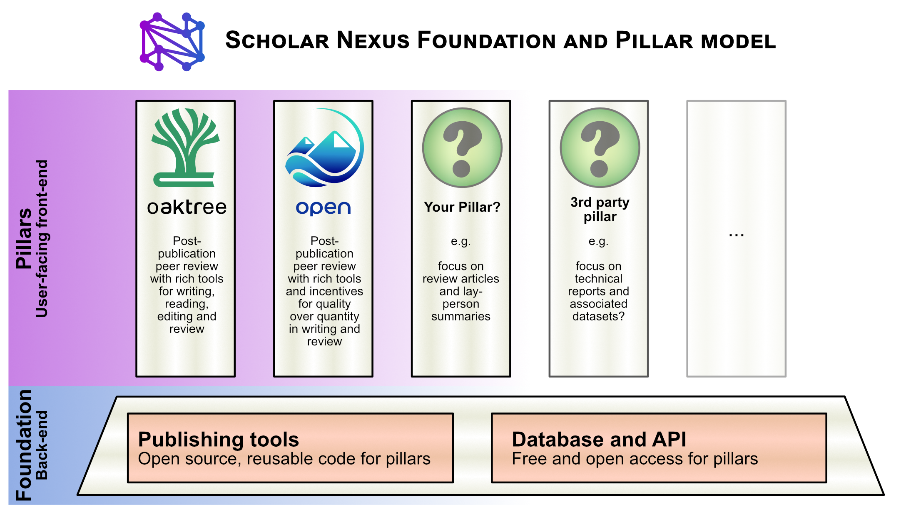

Scholarly publishing is broken. There is a crisis in peer review because researchers are reluctant to give up time when they are already stretched so thin. Authors must shop their papers down a long chain of journals, and papers can languish in review for months or even years. The experience of peer review is uneven, with biases in gender, race and culture. Knowledge is either hidden away behind the ability to pay (subscription model) or made publicly available only after authors pay high article processing charges (APCs) that only well funded researchers can afford.
We believe the time is right to fix scholarly publishing both socially and technologically. Recent announcements from the EU Council and the US WHOSTP, as well as a growing grassroots appetite for change signal this, but policy initiatives alone will not be sufficient to bring it about. For example, open access mandates have paradoxically boosted commercial publishers' profits and increased the financial barriers to active participation in research.
To create real and lasting change, we need a system directly driven by working scholars, that in the short term serves their immediate needs, but also leads to a shift in culture and enables us to experiment with new forms of scholarly communication. This cannot happen overnight because in the short term scholars are assessed on publications in existing journals. So how do we escape this vicious cycle? We take a huge amount of inspiration from preprint servers, which have been by far the most successful innovation in publishing. They have had a big impact because they give an immediate benefit without a high cost (in money or time) and lead to a shift towards more openness. However, they do not challenge the fundamental power dynamics of publisher-managed systems and so we need to go further.
We propose an open publishing infrastructure that is owned and managed by a worldwide group of stakeholder university libraries and freely accessible to authors and readers alike. This ownership structure ensures that it will be rooted, stable, and protected from commercial acquisition. Technically, the system will be based on a knowledge graph that can be adapted to the needs of different communities, providing a foundation for diversity and innovation. All code and data in the system will be freely available and modularly designed to encourage a vibrant and innovative third party ecosystem of ways to read, submit and evaluate work. These will be adapted to different scholarly disciplines and visions of publishing and evaluation because no single solution can address all the needs of current and future communities of scholars.
Our strategy for change is to put scholars' needs first, relentlessly focussing on a user experience that makes scholarly communication easier, faster, and more enjoyable. Like a preprint server, work can subsequently be submitted to journals, and we will even include time-saving technologies to facilitate this. At the same time, our system allows for a variety of approaches to peer review, giving it the capability to supplant the current system entirely. We will lead the way first in our own scientific community (Neuroscience) to make the new system a valued and normal way to contribute. The system will have succeeded when multiple communities of scholars feel at home and use it as their primary means of scholarly communication, only submitting to legacy journals as an afterthought. At that point, scholars will finally be able to let go of the current system, perhaps with the help of supportive mandates from funders or governments.
Technically, the system will have a Foundation providing database and API access to any number of third party Pillars that can store and access common content from the Foundation. The Pillars are user-facing websites designed by and for different scholarly communities, each with their own design and vision of open publishing. To facilitate this third party activity, all our code will be designed with reusability in mind and released as part of an open source publishing tools community.
To develop the foundation's ability to serve multiple pillars, we are launching this project with two initial pillars. After the launch of these pillars, and a short evaluation period, we will open the system for third party development and list newly developed pillars here.
Focus on rich and time-saving tools for publishing, reading, markup, open (non-anonymous) review, and scientific collaboration and communication.
Focus on delightful, intuitive, tool-rich post-publication anonymous review with incentives for participation and for quality over quantity.